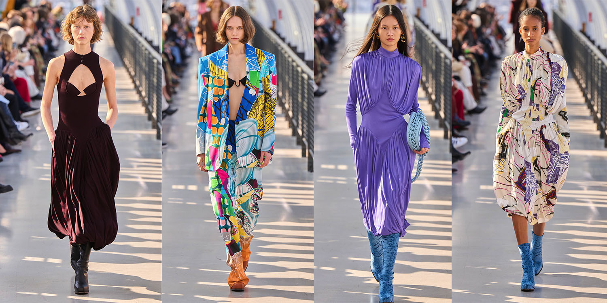
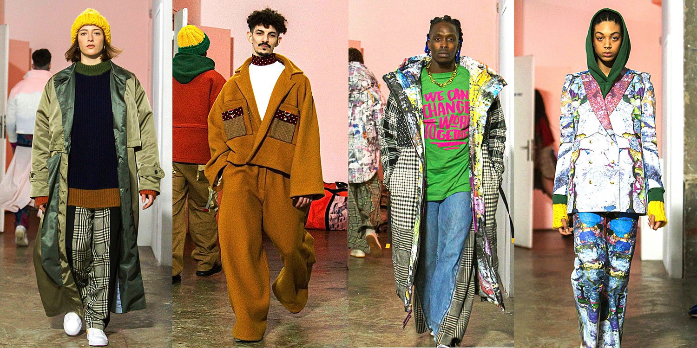

Nossa Missão
A Beleza Consciente acredita que é possível aliar estilo e sustentabilidade. Criamos roupas que respeitam o meio ambiente, valorizam a economia circular e promovem a reutilização de materiais. Nosso compromisso é reduzir o impacto ambiental da moda, oferecendo peças elegantes, atemporais e éticas.
Coleções

Stella McCartney
McCartney colaborou com Frank Stella, um artista moderno, para criar peças criativas e rastreáveis. 67% foram feitos com materiais sustentáveis como algodão orgânico, lã regenerativa NATIVA e muito mais.

Sheltersuit Foundation
As roupas foram projetadas em colaboração com vários designers e criadas a partir de materiais luxuosos reciclados e tecidos reaproveitados.